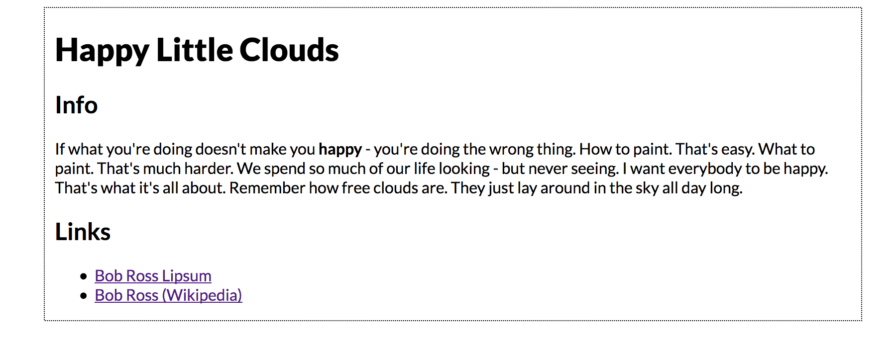
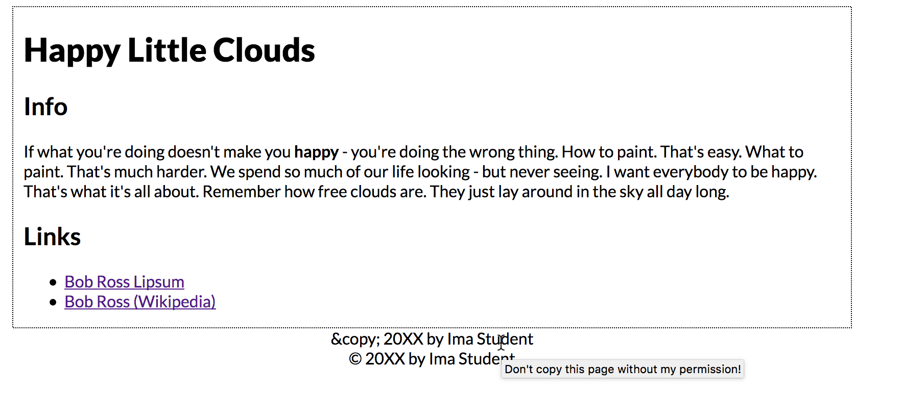

JS Exercise 3: More About the DOM
(Week 9, Tuesday 10/23)
In this exercise, we are going to look at alternatives to .innerHTML that can be used for "CRUD" (i.e. Create, Read, Update, Delete) HTML elements in the DOM.
Although we can do quite a bit with the .innerHTML property, it can only be used to modify existing elements. There are times that we might want to insert a new element somewhere on the page, or delete a specific element. To do these things, we need more control over the page than the .innerHTML property gives us.
Understanding the DOM
The browser DOM is an inverted tree structure that consists of nodes - which are mostly HTML elements (software objects) that have properties and methods associated with them. These nodes have hierarchical relationships with one another - parent, child, and sibling.

In this exercise, we will learn how to create new DOM elements and insert them anywhere into the DOM tree.
Here are some of the new DOM methods we will be working with in this exercise. These allow us to create DOM elements, modify them, insert them into the document, and delete them from the document (you can click on any of them to see the relevant MDN documentation):
document.createElement(elementName)document.createTextNode(text)element.getAttribute(attributeName)element.setAttribute(attributeName,attributeValue)element.appendChild(anotherElement)element.insertBefore(referenceElement,anotherElement)element.removeChild(anotherElement)element.replaceChild(oldElement,newElement)element.hasChildNodes()
And some properties:
New DOM Methods
Download the file dom-exercise2.html (right click on the link and choose "Save File As"). Preview it in a browser; it should look like this:
Let's use JavaScript to add a <footer> element to the page. Put this code into the script block at the bottom of the page:
When you preview the page, it should look like this:
There's a problem, obviously; the HTML entity for the copyright symbol displays properly in the second footer, but not the first. That's because you can't insert HTML entities using createTextNode; you'd have to use the Unicode encoding instead (\u00A9), or the © symbol itself if you're using Unicode encoding on your documents.
Inserting Elements Into the Middle of the DOM Tree
Rather than just append everything to the bottom of the page, let’s try adding elements to both the end and the middle of the list of links.
Add the following code to the end of your script block:
Reload your page; you should see the YouTube link in the list, before the Official Bob Ross Page link. Right-clicking and choosing "Inspect" will show it in the current DOM. However, keep in mind that you have not modified the actual file--just what the browser is using to represent the page.
Deleting DOM Elements
Removing DOM elements is also easy. Add the following to the end of the script block to remove the first footer:
Reload the page - the first footer is now gone. You can also see this in the inspector tab of the tools window.
A Few Notes
As with most programming languages, there are a variety of ways to accomplish the same task in JavaScript, and there is often not a "right" or "best" way. It will depend on your preferences as well as the context in which your code is being written.
Much of this process might have seemed a bit silly--why not just add this content into the original HTML of the page? Once we start triggering JavaScript on events other than the initial page load, however, this will all be a lot more useful!
Submitting Your Work
Link your completed dom-exercise2.html file from your landing page as DOM Exercise 2, and publish it to your GitHub site. This should be done before the start of Thursday's class.